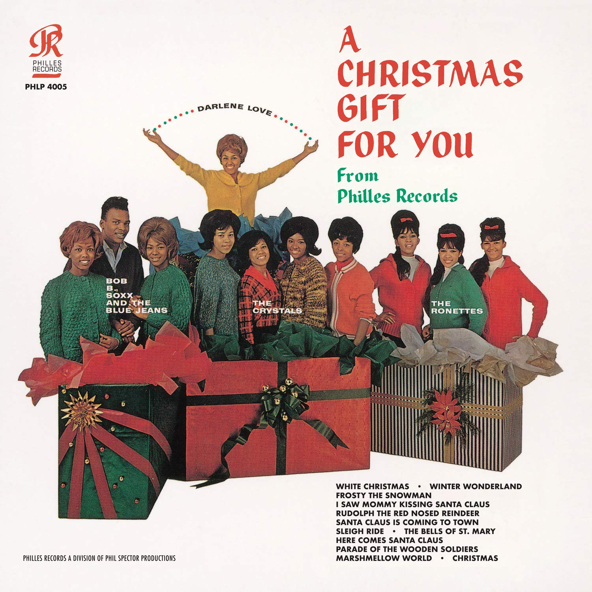
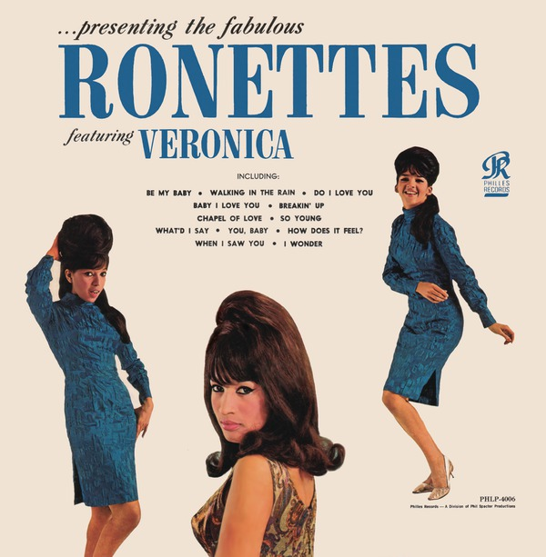
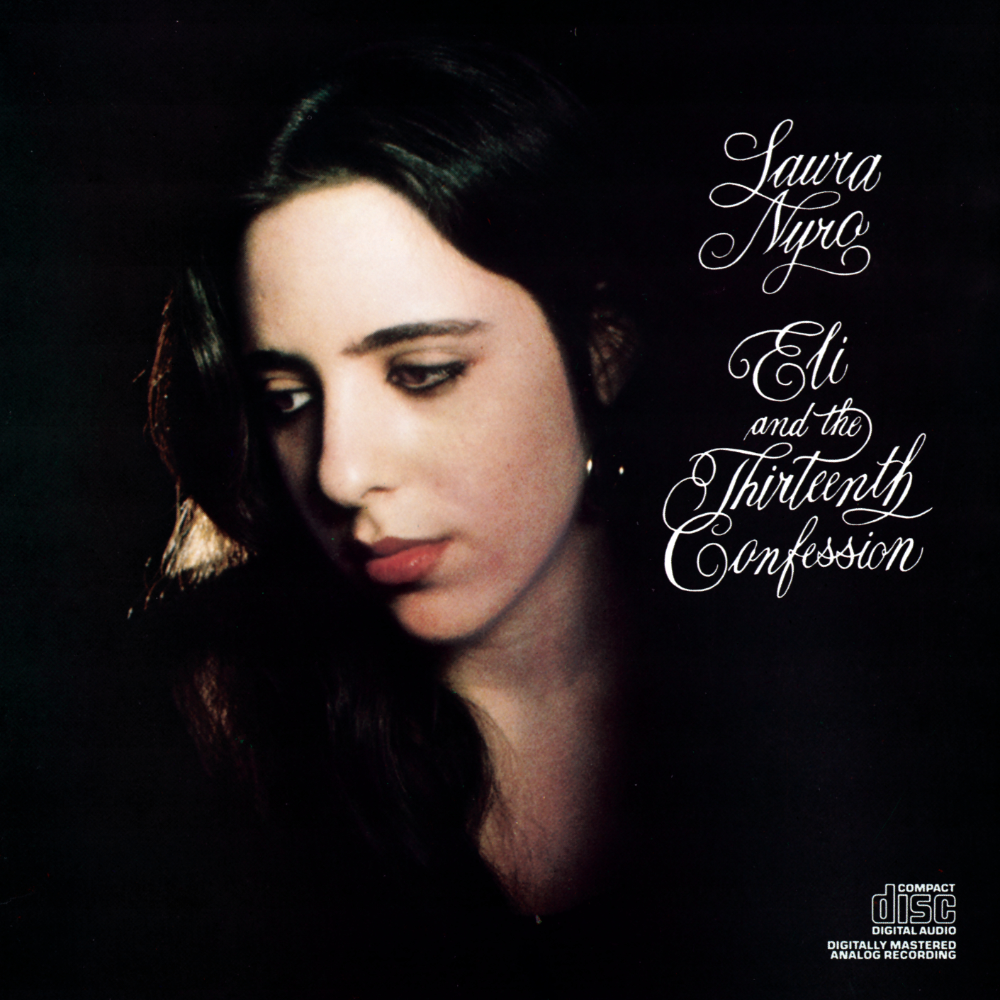
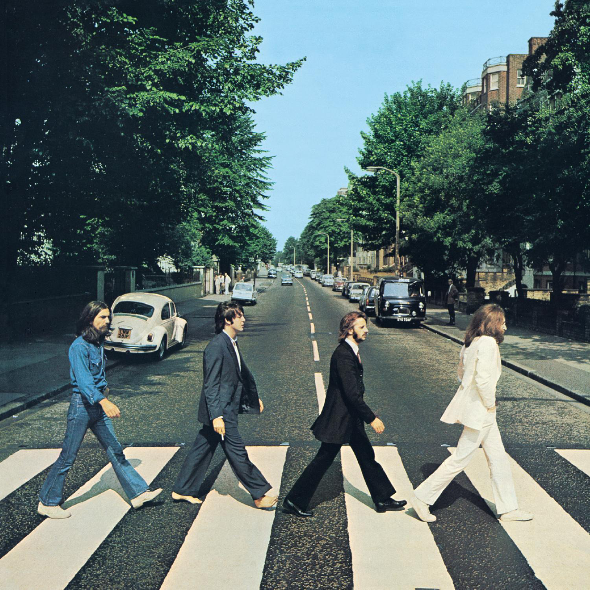
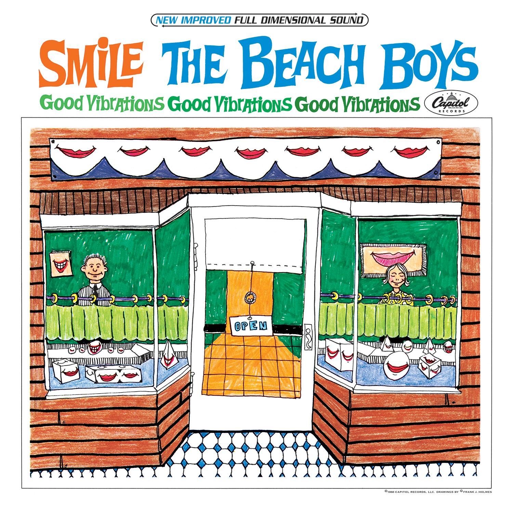

ALBUMS
-Please-Please-Me.png)
Please Please Me
The Beatles
March 22, 1963
14 tracks · 31:59
- 1I Saw Her Standing There2:52
- 2Misery1:47
- 3Anna (Go to Him)2:54
- 4Chains2:23
- 5Boys2:24
- 6Ask Me Why2:24
- 7Please Please Me2:00
- 8Love Me Do2:19
- 9P.S. I Love You2:02
- 10Baby It's You2:35
- 11Do You Want to Know a Secret1:56
- 12A Taste of Honey2:01
- 13There's a Place1:49
- 14Twist and Shout2:33
-Presenting-Dionne-Warwick.png)
Presenting Dionne Warwick
Dionne Warwick
April 10, 1963
12 tracks · 31:20
- 1This Empty Place2:55
- 2Wishin' and Hopin'2:55
- 3I Cry Alone2:37
- 4Zip-a-Dee-Doo-Dah2:40
- 5Make the Music Play2:25
- 6If You See Bill2:58
- 7Don't Make Me Over2:46
- 8It's Love That Really Counts2:16
- 9Unlucky2:25
- 10I Smiled Yesterday2:44
- 11Make It Easy on Yourself2:40
- 12The Love of a Boy1:59

A Christmas Gift for You from Philles Records
Various Artists (The Ronettes, The Crystals, Darlene Love, Bob B. Soxx & the Blue Jeans)
November 22, 1963
13 tracks · 34:12
- 1White Christmas2:52
- 2Frosty the Snowman2:16
- 3The Bells of St. Mary's2:54
- 4Santa Claus Is Coming to Town3:24
- 5Sleigh Ride3:00
- 6Marshmallow World2:23
- 7I Saw Mommy Kissing Santa Claus2:37
- 8Rudolph the Red-Nosed Reindeer2:30
- 9Winter Wonderland2:25
- 10Parade of the Wooden Soldiers2:55
- 11Christmas (Baby Please Come Home)2:45
- 12Here Comes Santa Claus2:03
- 13Silent Night2:08
-A-Hard-Days-Night.png)
A Hard Day's Night
The Beatles
July 10, 1964
13 tracks · 30:09
- 1A Hard Day's Night2:34
- 2I Should Have Known Better2:43
- 3If I Fell2:19
- 4I'm Happy Just to Dance with You1:56
- 5And I Love Her2:30
- 6Tell Me Why2:09
- 7Can't Buy Me Love2:12
- 8Any Time at All2:11
- 9I'll Cry Instead1:44
- 10Things We Said Today2:35
- 11When I Get Home2:17
- 12You Can't Do That2:35
- 13I'll Be Back2:24
-Where-Did-Our-Love-Go.png)
Where Did Our Love Go
The Supremes
August 31, 1964
12 tracks · 31:04
- 1Where Did Our Love Go2:33
- 2Run, Run, Run2:16
- 3Baby Love2:39
- 4When the Lovelight Starts Shining Through His Eyes3:05
- 5Come See About Me2:44
- 6Long Gone Lover2:27
- 7I'm Giving You Your Freedom2:40
- 8A Breathtaking Guy2:25
- 9He Means the World to Me2:00
- 10Standing at the Crossroads of Love2:27
- 11Your Kiss of Fire2:48
- 12Ask Any Girl3:00

Presenting the Fabulous Ronettes Featuring Veronica
The Ronettes
November 1964
12 tracks · 35:58
- 1Walking in the Rain3:16
- 2Do I Love You?2:50
- 3So Young2:36
- 4(The Best Part of) Breakin' Up3:02
- 5I Wonder2:51
- 6What'd I Say4:40
- 7Be My Baby2:40
- 8You, Baby2:56
- 9Baby, I Love You2:50
- 10How Does It Feel?2:40
- 11When I Saw You2:43
- 12Chapel of Love2:54
-The-Beach-Boys-Today!.png)
The Beach Boys Today!
The Beach Boys
March 8, 1965
12 tracks · 28:26
- 1Do You Wanna Dance?2:19
- 2Good to My Baby2:16
- 3Don't Hurt My Little Sister2:07
- 4When I Grow Up (To Be a Man)2:01
- 5Help Me, Ronda3:10
- 6Dance, Dance, Dance1:59
- 7Please Let Me Wonder2:45
- 8I'm So Young2:30
- 9Kiss Me, Baby2:35
- 10She Knows Me Too Well2:27
- 11In the Back of My Mind2:07
- 12Bull Session with the "Big Daddy"2:10
-Rubber-Soul.png)
Rubber Soul
The Beatles
December 3, 1965
14 tracks · 34:59
- 1Drive My Car2:25
- 2Norwegian Wood (This Bird Has Flown)2:05
- 3You Won't See Me3:18
- 4Nowhere Man2:40
- 5Think for Yourself2:16
- 6The Word2:41
- 7Michelle2:40
- 8What Goes On2:47
- 9Girl2:30
- 10I'm Looking Through You2:23
- 11In My Life2:24
- 12Wait2:12
- 13If I Needed Someone2:20
- 14Run for Your Life2:18
-Pet-Sounds.png)
Pet Sounds
The Beach Boys
May 16, 1966
13 tracks · 35:57
- 1Wouldn't It Be Nice2:25
- 2You Still Believe in Me2:31
- 3That's Not Me2:28
- 4Don't Talk (Put Your Head on My Shoulder)2:53
- 5I'm Waiting for the Day3:05
- 6Let's Go Away for Awhile2:18
- 7Sloop John B2:58
- 8God Only Knows2:51
- 9I Know There's an Answer3:09
- 10Here Today2:54
- 11I Just Wasn't Made for These Times3:12
- 12Pet Sounds2:22
- 13Caroline, No2:51
-Revolver.png)
Revolver
The Beatles
August 5, 1966
14 tracks · 35:05
- 1Taxman2:36
- 2Eleanor Rigby2:11
- 3I'm Only Sleeping3:02
- 4Love You To3:00
- 5Here, There and Everywhere2:29
- 6Yellow Submarine2:40
- 7She Said She Said2:39
- 8Good Day Sunshine2:08
- 9And Your Bird Can Sing2:02
- 10For No One2:03
- 11Doctor Robert2:14
- 12I Want to Tell You2:30
- 13Got to Get You into My Life2:31
- 14Tomorrow Never Knows3:00
-Sgt-Peppers-Lonely-Hearts-Club-Band.png)
Sgt. Pepper's Lonely Hearts Club Band
The Beatles
May 26, 1967
13 tracks · 39:38
- 1Sgt. Pepper's Lonely Hearts Club Band2:00
- 2With a Little Help from My Friends2:42
- 3Lucy in the Sky with Diamonds3:28
- 4Getting Better2:48
- 5Fixing a Hole2:36
- 6She's Leaving Home3:25
- 7Being for the Benefit of Mr. Kite!2:37
- 8Within You Without You5:05
- 9When I'm Sixty-Four2:37
- 10Lovely Rita2:42
- 11Good Morning Good Morning2:42
- 12Sgt. Pepper's Lonely Hearts Club Band (Reprise)1:18
- 13A Day in the Life5:38
-Reach-Out.png)
Reach Out
The Four Tops
July 1967
12 tracks · 32:30
- 1Reach Out I'll Be There2:58
- 2Walk Away Renée2:42
- 37-Rooms of Gloom2:31
- 4If I Were a Carpenter2:47
- 5Last Train to Clarksville2:38
- 6I'll Turn to Stone2:38
- 7I'm a Believer2:39
- 8Standing in the Shadows of Love2:36
- 9Bernadette2:59
- 10Cherish3:00
- 11Wonderful Baby2:32
- 12What Else Is There to Do (But Think About You)2:30

Eli and the Thirteenth Confession
Laura Nyro
March 3, 1968
13 tracks · 46:15
- 1Luckie3:00
- 2Lu2:44
- 3Sweet Blindness2:37
- 4Poverty Train4:16
- 5Lonely Women3:32
- 6Eli's Comin'3:58
- 7Timer3:22
- 8Stoned Soul Picnic3:47
- 9Emmie4:20
- 10Woman's Blues3:46
- 11Once It Was Alright Now (Farmer Joe)2:58
- 12December's Boudoir5:05
- 13The Confession2:50
-The-Beatles-(White-Album).png)
The Beatles (White Album)
The Beatles
November 22, 1968
30 tracks · 1:33:40
- 1Back in the U.S.S.R.2:43
- 2Dear Prudence3:56
- 3Glass Onion2:18
- 4Ob-La-Di, Ob-La-Da3:08
- 5Wild Honey Pie0:52
- 6The Continuing Story of Bungalow Bill3:14
- 7While My Guitar Gently Weeps4:45
- 8Happiness Is a Warm Gun2:47
- 9Martha My Dear2:28
- 10I'm So Tired2:03
- 11Blackbird2:18
- 12Piggies2:04
- 13Rocky Raccoon3:33
- 14Don't Pass Me By3:51
- 15Why Don't We Do It in the Road?1:41
- 16I Will1:46
- 17Julia2:57
- 18Birthday2:42
- 19Yer Blues4:01
- 20Mother Nature's Son2:48
- 21Everybody's Got Something to Hide Except Me and My Monkey2:24
- 22Sexy Sadie3:15
- 23Helter Skelter4:30
- 24Long, Long, Long3:08
- 25Revolution 14:15
- 26Honey Pie2:41
- 27Savoy Truffle2:54
- 28Cry Baby Cry3:02
- 29Revolution 98:22
- 30Good Night3:14
-Dusty-in-Memphis.png)
Dusty in Memphis
Dusty Springfield
March 31, 1969
11 tracks · 33:11
- 1Just a Little Lovin'2:18
- 2So Much Love3:29
- 3Son of a Preacher Man2:27
- 4I Don't Want to Hear It Anymore3:07
- 5Don't Forget About Me2:49
- 6Breakfast in Bed2:55
- 7Just One Smile2:39
- 8The Windmills of Your Mind3:49
- 9In the Land of Make Believe2:30
- 10No Easy Way Down3:09
- 11I Can't Make It Alone3:59

Abbey Road
The Beatles
September 26, 1969
17 tracks · 47:04
- 1Come Together4:19
- 2Something3:02
- 3Maxwell's Silver Hammer3:27
- 4Oh! Darling3:27
- 5Octopus's Garden2:51
- 6I Want You (She's So Heavy)7:47
- 7Here Comes the Sun3:05
- 8Because2:45
- 9You Never Give Me Your Money4:03
- 10Sun King2:26
- 11Mean Mr. Mustard1:06
- 12Polythene Pam1:13
- 13She Came In Through the Bathroom Window1:58
- 14Golden Slumbers1:31
- 15Carry That Weight1:36
- 16The End2:05
- 17Her Majesty0:23
-Tapestry.png)
Tapestry
Carole King
February 10, 1971
12 tracks · 44:49
- 1I Feel the Earth Move3:00
- 2So Far Away3:54
- 3It's Too Late3:51
- 4Home Again2:29
- 5Beautiful3:08
- 6Way Over Yonder4:49
- 7You've Got a Friend5:09
- 8Where You Lead3:20
- 9Will You Love Me Tomorrow4:13
- 10Smackwater Jack3:42
- 11Tapestry3:15
- 12(You Make Me Feel Like) A Natural Woman3:59

The Smile Sessions
The Beach Boys
November 1, 2011
19 tracks · 48:13
- 1Our Prayer1:05
- 2Gee0:51
- 3Heroes and Villains4:52
- 4Do You Like Worms (Roll Plymouth Rock)3:35
- 5I'm in Great Shape0:28
- 6Barnyard0:48
- 7My Only Sunshine1:55
- 8Cabin Essence3:30
- 9Wonderful2:04
- 10Look (Song for Children)2:31
- 11Child Is Father of the Man2:10
- 12Surf's Up4:12
- 13I Wanna Be Around / Workshop1:23
- 14Vega-Tables3:49
- 15Holidays2:32
- 16Wind Chimes3:06
- 17The Elements: Fire (Mrs. O'Leary's Cow)2:35
- 18Love to Say Dada2:32
- 19Good Vibrations4:15
Nothing on this shelf yet.